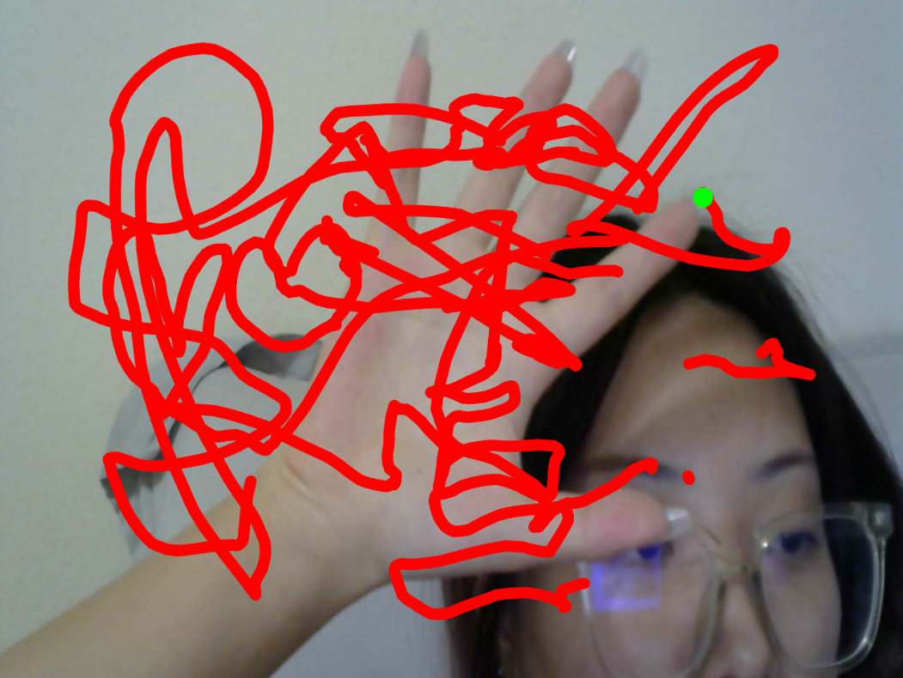
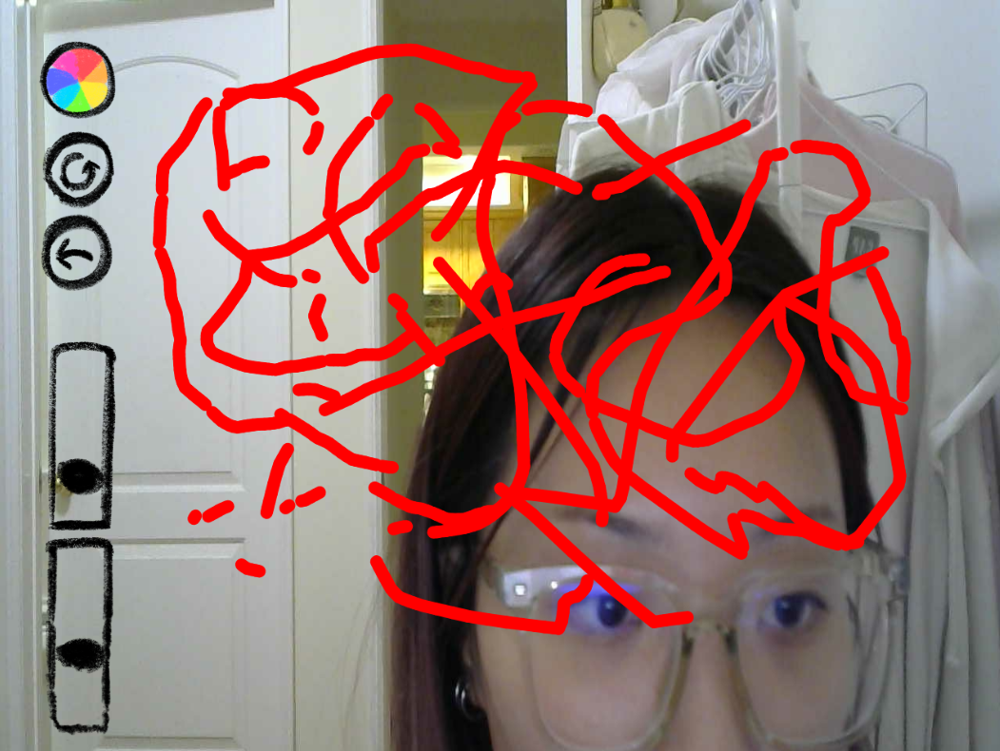

I am image what would a phone stand be like in future, becasue sometime I am mad about the phone stand now, it's hard, difficult to use and what's the most important I cannot put the phone stand wherever I want. So I assumed in the minimalism future, phone stand will simulate octopus tentacles, but they will be made of a material similar to liquid glass, which allows the phone stand to be shaped freely.

I made a shape similar to "being randomly stretched a bit after being put in a car", and I want to try adding an internal structure to it.

I made a ideal material. It's super close to glass (or metal), but the object itself is soft.

So what about only one index finger as "pen", and if another index finger show up, it means "pause"? I think this idea is perfect and it worked, it worked terribly. Unfortunely for now neither has "pause" nor "two finger painting".
